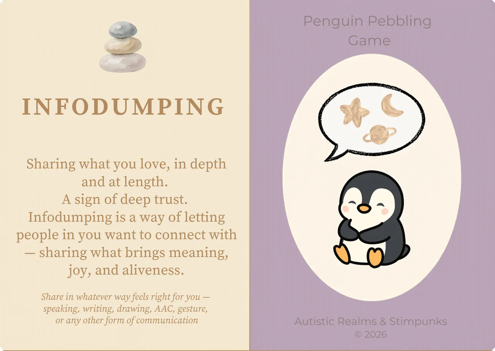
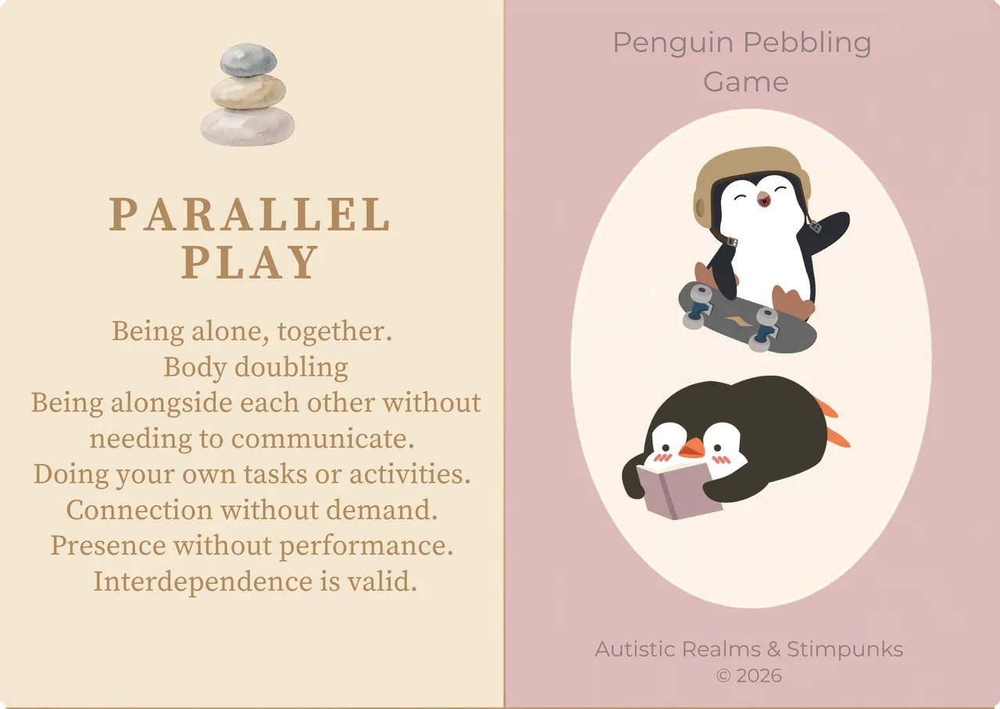
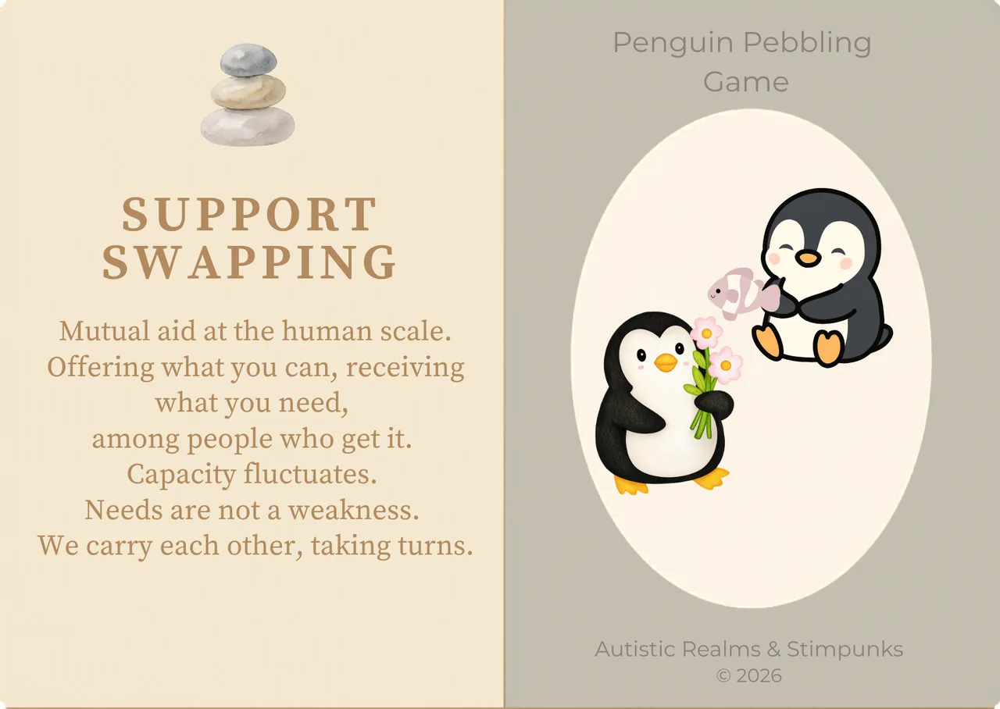
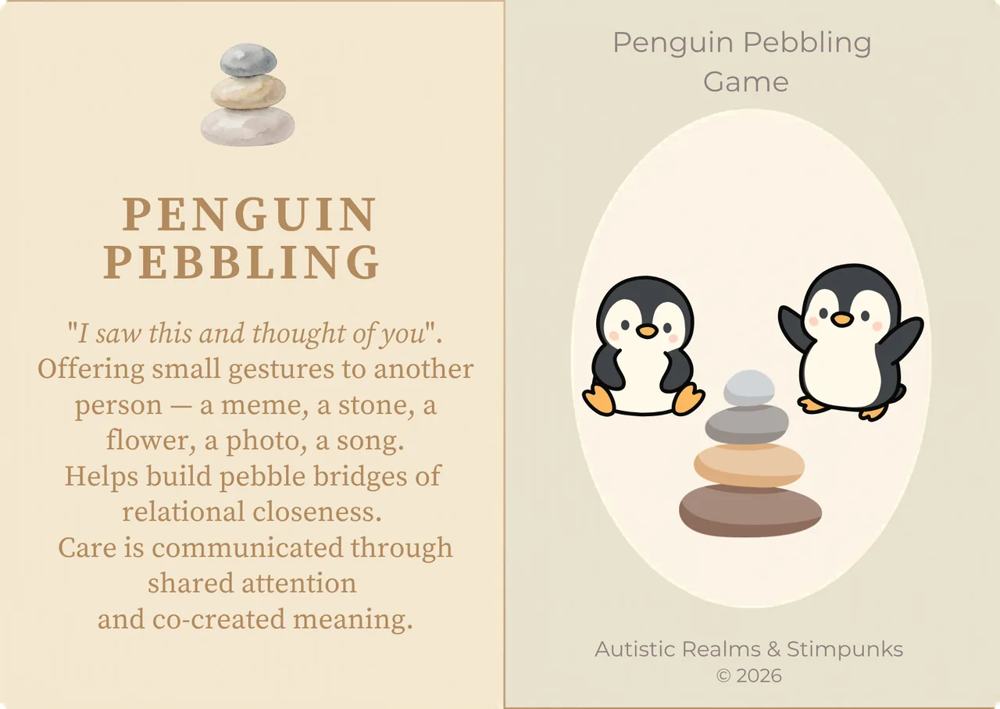
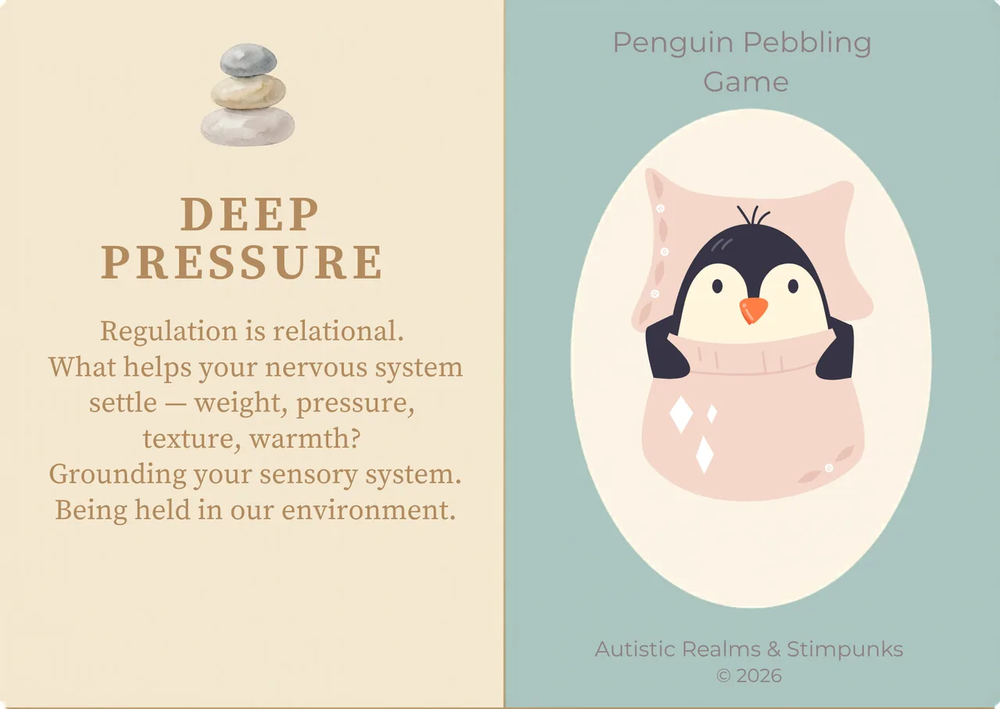

A quick guide
Infodumping: Sharing what you love, in depth and at length. A sign of deep trust. Infodumping is a way of letting people in who you want to connect with — sharing about your passions, what brings meaning, joy, and aliveness.
Parallel Play: Being alone, together. Body doubling. Being alongside each other without needing to communicate. Doing your own tasks or activities. Connection without demand. Presence without performance. Interdependence is valid.
Support Swapping: Mutual aid at the human scale. Offering what you can, receiving what you need, among people who ‘get it’. Capacity fluctuates. Needs are not a weakness. We carry each other, taking turns.
Penguin Pebbling: “I saw this and thought of you.” Offering small gestures to another person — a meme, a stone, a flower, a photo, a song or whatever brings meaning and joy to the person you are thinking of. Helps build bridges of relational closeness. Care is communicated through shared attention and co-created meaning.
Deep Pressure: Regulation is relational. What helps your nervous system settle — weight, pressure, texture, warmth? Grounding your sensory system. Being held in our environment.